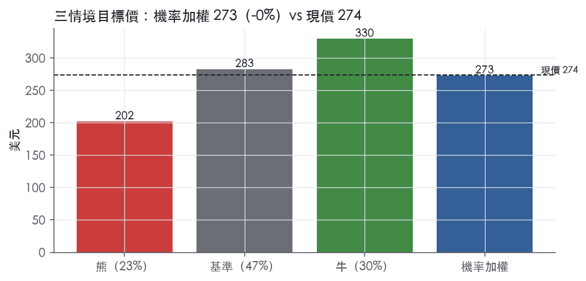
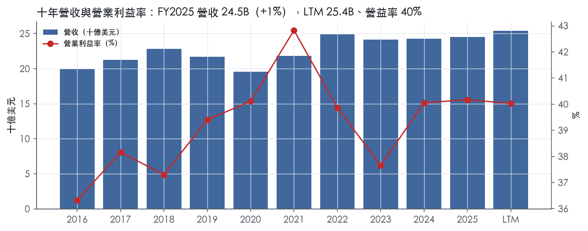
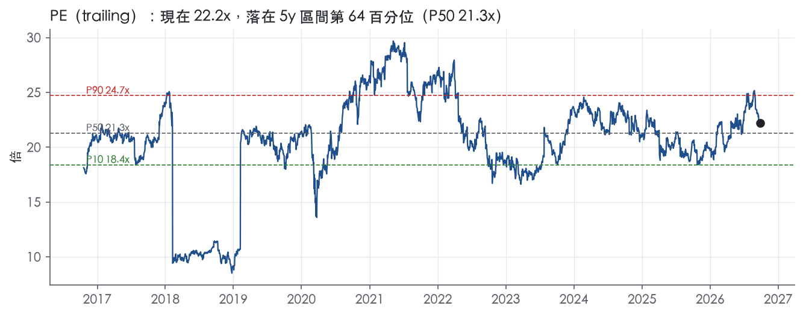
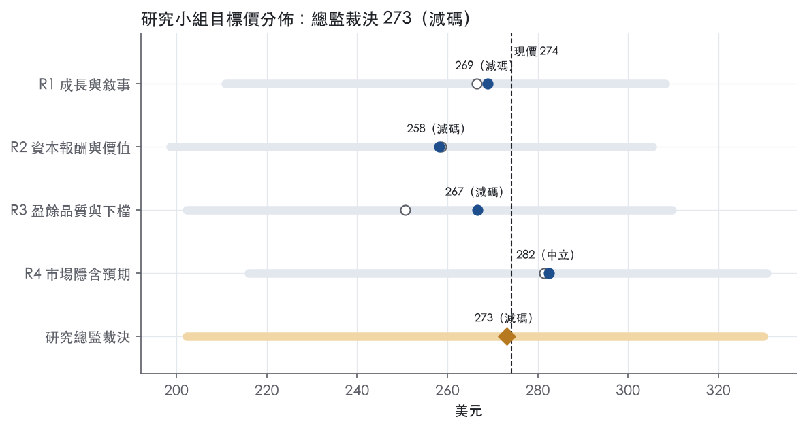
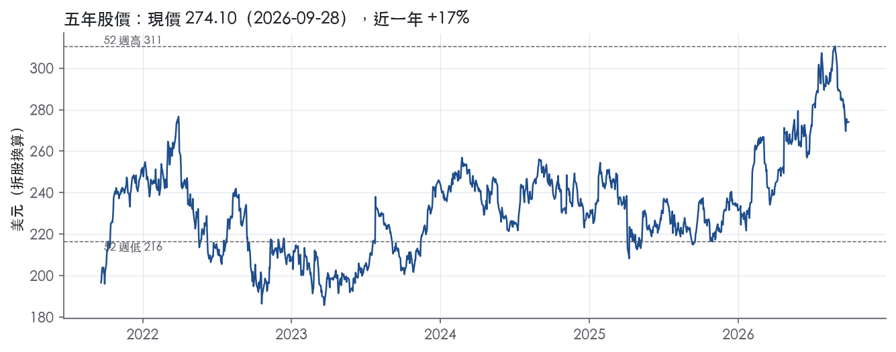

評等總表 › 工業 › UNP
絕對低個位數正報酬、相對同業落後，中性｜評等 減碼｜目標價 273
| 評等 | 減碼（邊界，鄰近中立） |
| 12 個月目標價 | 273 美元 |
| 現價 | 274.10 美元（2026-09-28） |
| 預期報酬 | 股價 -0.4%＋股息 2.0%＝總報酬 +1.7%；同業籃門檻 9.3%，超額 -7.6% |
| 估值方法 | P/E 21.5x，套在第 5–8 季的EPS（也就是一年後的未來四季） |
| 三情境 | 熊 202／基準 283／牛 330 |
| 研究流程 | 四位研究員兩輪辯論＋研究總監裁決 |
| 資料來源 | SEC EDGAR XBRL、Tiingo、FRED（全免費） |
絕對低個位數正報酬、相對同業落後，中性（研究總監裁決，四位研究員兩輪辯論後）
評等 減碼（邊界，鄰近中立）｜12 個月目標價 273 美元（總監三情境機率加權 279 與研究員中位數 268 各半）｜現價 274.10（2026-09-28）
預期報酬：股價 -0.4%＋股息 2.0%＝總報酬 +1.7%。同業籃門檻 9.3%，超額 -7.6%，離中立的分界不到三個百分點，屬邊界評等（落在其他級距的機率約三成）。
估值方法：P/E 21.5x，套在第 5–8 季的EPS（也就是一年後的未來四季）。三情境：熊 202（23%）／基準 283（47%）／牛 330（30%）。
立場中性而評等減碼：評等看的是「預期總報酬 1.7% − 同業籃門檻 9.3%」＝超額 -7.6%，不是絕對漲跌；中性但超額偏離門檻，代表情境機率或股利把報酬推離門檻。
什麼會讓研究總監改變看法：Q3'26 剔除燃油貨運營收與 Premium 運量同步轉負，或 GAAP 營益率跌破 39.5% 且公司歸因於成本而非燃油，我會把熊機率上修至 30% 以上並把倍數錨退到前瞻帶 P50；STB 在 2027-06-30 前受理重提申請且未附互惠調車條件，我會把基準倍數上移至 22.4x 以上並轉為看多。
| 過去四季（實際，FY2026Q2） | 未來四季 | 第 5–8 季 | 第 9–12 季 | |
|---|---|---|---|---|
| 營收（B） | 25.4B | 26.7B | 27.6B | 28.7B |
| 營收成長 | 4.2% | 5.0% | 3.5% | 4.0% |
| 營業利益率 | 40.0% | 40.0% | 41.2% | 41.5% |
| EPS（美元） | 12.34 | 12.26 | 13.16 | 13.87 |
| EPS 成長 | 7.4% | -0.7% | 7.4% | 5.4% |
| 每股股息（美元） | 5.52 | 5.52 | 5.52 | 5.52 |
| P/E（現價） | 22.2x | 22.4x | 20.8x | 19.8x |
| 股息殖利率（現價） | 2.0% | 2.0% | 2.0% | 2.0% |
過去四季為申報數字；預測為研究總監的假設、程式計算。倍數與殖利率都用現價計算，用來看現價對應各期獲利的高低。
| 情境 | 機率（歷史） | 故事 | 未來四季營收成長 | 第 5–8 季營益率 | 倍數 | 目標價 | 股價漲跌 |
|---|---|---|---|---|---|---|---|
| 熊 | 23%（19%） | 對應風險表第 4 條關稅壓抑 Premium 運量加第 2 條燃油，類 FY2023 貨運衰退去槓桿；第 1 條 STB 附重條件核准為次要觸發 | -3.0% | 38.3% | 18.8x | 202 | -26.2% |
| 基準 | 47%（54%） | 核心成長 3–4%、燃油持平、營益率靠生產力與定價緩升至 41.2%，併購懸置延續，倍數停在前瞻帶 P75 | 5.0% | 41.2% | 21.5x | 283 | 3.3% |
| 牛 | 30%（26%） | STB 受理重提申請並公布時程，剔除燃油成長達 5% 以上，相對同業 P/E 折價 -16.9% 向 5 年平均溢價收斂 | 7.5% | 42.0% | 23.5x | 330 | 20.4% |
目標價由程式依研究總監的驅動與倍數計算；機率由研究總監給定。括號內是歷史頻率：把這檔股票過去十年 12 個月報酬的波動形狀，置中在基準情境，結果落在各情境附近的比例。

四位研究員用不同方法各自估值，回應研究總監的質疑後交出第二輪，最後由總監逐點裁決。各研究員的主張見第七章，裁決理由見第八章，完整論證見《研究底稿》。
| 立場（一輪→二輪） | 加權目標價（一輪→二輪） | 評等（一輪→二輪） | 第二輪倍數 | 熊～牛目標價 | |
|---|---|---|---|---|---|
| R1 成長與敘事 | 中性→看空 | 267→269 | 減碼→減碼 | 22.0x | 211～308 |
| R2 資本報酬與價值 | 中性→看空 | 259→258 | 減碼→減碼 | 20.4x | 199～305 |
| R3 盈餘品質與下檔 | 中性→中性 | 251→267 | 賣出→減碼 | 20.8x | 202～310 |
| R4 市場隱含預期 | 中性→中性 | 281→282 | 中立→中立 | 21.5x | 216～331 |
| 研究總監裁決 | 中性 | 273 | 減碼 | 21.5x | 202～330 |
目標價由程式依各自的驅動與倍數計算；評等＝機率加權總報酬 − 同業籃門檻。
Union Pacific Railroad Company 連結美國西部三分之二共 23 州的鐵路網，是全美貨運鐵路的核心骨幹之一¹。公司擁有 32,889 英里的路網里程，連接太平洋岸與墨西哥灣岸港口至中西部與東部門戶，並提供通往墨西哥與加拿大關鍵鐵路口岸的多條走廊¹。它是唯一同時服務墨西哥全部六大關口的鐵路公司¹。客戶端涵蓋農產品加工商、化學與塑膠製造商、汽車組裝廠、煤電業者以及國際/國內貨櫃物流業者，本質上是把大宗原物料與製成品從產地/港口運到中西部與全美消費中心的基礎設施型企業。公司在財報中僅揭露單一可報告營運分部——鐵路本身，因路網整合特性使然¹。LTM 營收 254.1 億美元，是典型的高固定成本、高營運槓桿事業，營益率長期維持在 37–42% 區間。
公司雖只有一個報告分部，但依商品群組拆分為 Bulk、Industrial、Premium 三大類，2025 年合計貨運營收 232 億美元¹。Bulk（穀物與穀物製品、肥料、食品冷藏、煤炭與再生能源）2025 年占貨運營收 33%，其中 Powder River Basin 煤炭是最大宗業務來源¹。Industrial（建材、工業化學品、塑膠、林產品、金屬礦砂、石油與 LPG、蘇打灰、砂石等）占比最高，達 37%，靠基建投資與工業製造需求拉動¹。Premium（整車、汽車零件、國內/國際貨櫃）占 30%，公司自稱是密西西比河以西最大汽車貨運業者，營運或連結逾 40 個車輛配送中心與六座整車組裝廠¹。三分部占比相對均衡（33/37/30），意味公司對單一終端市場的曝險並不極端集中，但 Premium 中的國際貨櫃業務對全球貿易與港口吞吐量敏感度較高。10-K 未進一步揭露各分部的獲利率或資本回報率差異。
公司地理覆蓋西部 23 州，出口/進口貨物透過灣岸、西岸與東岸港口以及美墨、美加邊境流通¹。穀物業務連接中西部與西部產區至太平洋西北岸與灣岸出口碼頭，也服務墨西哥市場¹。國際貨櫃業務主要經西岸港口進出，轉運至公司內陸多座貨櫃場¹。國內貨櫃客戶以貨櫃行銷公司（主要是貨主代理與物流公司）以及整車卡車業者為主¹。通路型態上，鐵路屬於 B2B 大宗承運模式，並無終端消費者直接接觸。公司於 2025 年投入 35 億美元資本支出，用於強化基礎設施、更新老舊機車、擴大堪薩斯城、Inland Empire、Lathrop 貨櫃場，以及德州灣岸雜貨場與太平洋西北/西南幹線¹，顯示資本配置持續偏向西岸/灣岸樞紐與墨西哥走廊，強化其地理獨佔優勢。
FY2025Q3 營收 62.4 億美元、年增 2.5%、營益率 40.8%。FY2025Q4 營收轉為年減 0.6% 至 60.8 億美元，營益率回落至 39.5%。FY2026Q1 營收 62.2 億美元、年增 3.2%，公司稱貨運營收成長 4%，剔除燃油附加費後成長 3%，營運比率 60.5%（改善 20 個基點）、調整後營運比率 59.9%²，並重申 2026 年 EPS 中個位數成長、三年 CAGR 高個位數至低雙位數目標²。FY2026Q2 是本波最強一季，營收 68.6 億美元、年增 11.5%，公司揭露營業收入 68.64 億美元、年增 12%，貨運營收成長 12%、剔除燃油後成長 4%，稀釋 EPS 3.36 美元、年增 7%，調整後 EPS 3.41 美元、年增 13%³；營運比率 59.7%、調整後 59.2%，燃油價格上漲拖累營運比率 120 個基點³。公司同時把全年 EPS 成長展望由中個位數上修至高個位數³。
公司自陳的策略邏輯是「安全、服務、營運卓越帶動成長」（Safety, Service, and Operational Excellence leads to Growth），這是貫穿 10-K 與股東信的核心敘事¹。管理層強調 2025 年營收成長來自「強勁的核心定價與較高運量」，而剔除燃油後貨運營收成長 3%（全年）¹。2026 年上半年管理層進一步將動能歸因於「強力執行與運量成長」，並提出與 Norfolk Southern 合併、打造「美國第一條橫貫大陸鐵路」作為長期歷史性機會，目前正推進監管審查程序³。資本配置策略明確：2026 年資本支出計畫 33 億美元、承諾定價增幅超過通膨、持續改善營運比率朝業界領先水準邁進、維持強勁現金生成，以及一貫的年度股息增長³。
就投資意涵而言，UNP 的成長引擎本質是「量價齊升＋成本紀律」的營運槓桿模型，Norfolk Southern 併購案若過關將是結構性的估值重估催化劑，但監管與整合風險是最大不確定性來源。近兩季的加速（尤其 FY2026Q2 營收年增 11.5%）部分受惠於燃油附加費與基期效應，剔除燃油的核心貨運成長 4% 更能反映真實需求動能，投資人應緊盯這個剔除燃油後的成長率而非表面營收年增率。目前 trailing P/E 22.2x 位於五年區間 64 分位、EV/EBITDA 15.1x 位於 69 分位，估值已計入相當程度的營運改善與併購樂觀情緒。

UNP 評為寬護城河、趨勢穩定。它的美西鐵路網是無法複製的效率規模資產，ROIC 在有資料的年度中每一年都高於資本成本代理值，我們有把握這個狀態能維持 10 年以上。支撐評級的是路網本身，而不是管理層的執行力；執行力只決定 ROIC 落在歷史區間的上緣還是下緣。評級的主要不確定性來自監管，不是競爭對手。
優勢來源以效率規模為主，成本優勢與監管授權型無形資產為輔。原文沒有提供轉換成本或網路效應的證據，所以這兩類不列入。
效率規模
成本優勢（相對卡車）
無形資產（監管授權）
量化底稿支持寬護城河評級，ROIC 利差與利潤率穩定度都符合特徵，但有三處需要說明。
支持評級的數字
需要說明的衝突
最大的侵蝕風險是監管規則改變，其次是結構性的貨種流失，競爭對手反而不是主因。
監管規則
Norfolk Southern 合併
煤炭
貨櫃業務
勞動成本
資料限制與趨勢判斷
相對卡車與物流等一般運輸同業，目標倍數應給溢價；相對其他 Class I 鐵路則持平，因為寬護城河是北美鐵路業的共同特徵，不是 UNP 獨有。溢價可以支撐 10 年以上的超額報酬期假設，但 STB 互惠調車規則與 NS 合併核准條件應在情境分析中作為主要下修風險處理。現行 P/E 已高於五年中位數 21.3x，在合併結果明朗前，不建議在寬護城河的基礎上再額外加價。
| 指標 | 最新 | 十年平均 | 標準差 | 最低 | 最高 |
|---|---|---|---|---|---|
| ROIC | 16.0% | 16.6% | 2.1% | 14.2% | 21.9% |
| 營業利益率 | 40.2% | 39.2% | 1.8% | 36.3% | 42.8% |
| FCF 利潤率 | 22.4% | 23.2% | 3.1% | 18.8% | 28.7% |
| ROE | 40.4% | 40.1% | 8.6% | 26.4% | 53.2% |
程式計算。資本成本代理值（10 年債＋5%）：10.2%；ROIC 平均減資本成本：6.4%；ROIC 有資料的 9 年中，高於資本成本 9 年。
LTM 營業現金流／淨利 1.40x，近三年平均 1.33x，十年平均 1.37x，全部綠燈，代表帳上淨利持續有現金流佐證，沒有靠應計項目撐盈餘的跡象。應計比率（(淨利−CFO)／平均總資產）LTM 為 -4.2%，近三年 -3.3%，十年 -2.9%，全部為負值且優於 ≤0% 的綠燈門檻，代表 CFO 長期高於淨利，主因是鐵路業龐大的折舊費用回加。自由現金流／淨利則是 LTM 0.89x、近三年 0.80x、十年 0.83x，落在黃燈區間，主因資本支出穩定吃掉現金；公司自己揭露的「現金流量轉換率」（CFO 減資本投資／淨利）2025 年為 77%，2024 年 87%，2023 年 75%⁴，與計分表方向一致，說明這不是新現象、而是鐵路資本密集行業的常態。公司定義的非 GAAP 自由現金流（CFO 減投資活動現金流減股利）2025 年為 22.92 億美元，較 2024 年的 28.08 億美元下滑⁴，主因資本支出增加與短期投資買入，屬於資本配置決策而非盈餘品質惡化。整體看，現金轉換沒有掉到紅燈區，扣除資本支出後的自由現金流覆蓋率偏緊但可解釋。
最新一季新聞稿揭露 2026 年第二季調整後稀釋 EPS 3.41 美元，高於 GAAP 稀釋 EPS 3.36 美元；調整後營業比率 59.2%，優於 GAAP 的 59.7%³。新聞稿本身未附完整調節表細項（僅提示另有補充附表），因此無法逐項拆解調整內容的金額。可確認的是公司另外揭露「調整後 EBITDA」與「調整後負債」兩個非 GAAP 指標：2025 年淨利 71.38 億美元加回所得稅費用 20.28 億、折舊 24.65 億、利息費用 13.09 億後 EBITDA 為 129.40 億美元，再扣除其他收入淨額 6.29 億、加回租賃利息 0.40 億，調整後 EBITDA 為 123.51 億美元⁴，這個調整主要是把非核心的「其他收入」剔除，方向合理。值得注意的是 2025 年其他收入淨額大增 2.79 億美元，主因是房地產收入增加 2.95 億美元，其中包含 2.50 億美元的工業園區土地出售收益⁴——這是一次性資產處分利得，公司已在調整後 EBITDA 中扣除，判斷合理。SBC／營收 LTM 0.5%、近三年 0.5%、十年 0.4%，遠低於 3% 綠燈門檻，股權薪酬對盈餘的稀釋影響極小，不構成調整爭議。
淨負債／EBITDA LTM 2.26x，近三年平均 2.58x，十年平均 2.27x，屬黃燈，與公司自揭的「調整後負債／調整後 EBITDA」2025 年、2024 年皆為 2.7x、2023 年 3.0x 相互印證⁴。公司在 2025 年並未持有浮動利率負債，利率 1% 下降會使既有債務公允價值增加約 32 億美元，顯示債務結構以固定利率為主、對短期升息不敏感⁴。合約義務表顯示總負債名目金額達 594.24 億美元（含利息成分 260.37 億美元），到期分布拉得很長，2030 年後到期部位仍有 476.67 億美元⁴，長天期結構降低再融資風險但也代表槓桿會長期存在。利息保障倍數 LTM 7.92x、近三年 7.32x、十年 8.43x 為黃燈，2025 年營業利益 98 億美元（10-K 原文「Operating income of $9.8 billion」）對利息費用 13.09 億美元的覆蓋仍屬穩健，僅因十年均值被更早期較低槓桿年度墊高而顯得近三年「轉黃」。資本配置面，2025 年公司以現金流量產生 92.90 億美元 CFO，支付 32.36 億美元股利、回購 27 億美元股票、償還 14 億美元長期債務，並同時宣布收購 Norfolk Southern 並暫停股票回購計畫⁴。這直接解釋了稀釋股數年變動 LTM 僅 0.1%、但近三年 -1.5%、十年平均 -3.7% 的黃燈落差——回購暫停是為保留資金因應併購，非稀釋失控（量化底稿＋10-K）。（股利＋回購）／淨利 LTM 45.1%、近三年 71.2%、十年 111.4% 皆為黃燈，十年均值超過 100% 顯示歷史上確實有靠舉債支撐股東回饋的情況，但近期比率已明顯下降，與回購暫停、把現金留給併購案的策略一致。
估值應以 GAAP 淨利與 CFO 為主要基礎，非 GAAP 調整後 EPS／OR 可作輔助參考，因為公司揭露的調整項（其他收入中的一次性土地出售利得）金額不大且已被合理剔除，不需要對盈餘做額外大幅打折。現金轉換與應計比率長期健康，支持沿用 GAAP 盈餘作為估值輸入，但自由現金流覆蓋偏緊（黃燈）與回購暫停意味短期每股自由現金流成長動能會放緩，模型中股數假設應反映「回購凍結」而非延續歷史十年的稀釋改善速度。槓桿雖為黃燈但結構穩健，暫不構成限制估值倍數的理由，惟若 Norfolk Southern 併購案完成，新增負債規模將是下一版報告需要重新評估槓桿與利息保障是否轉紅的關鍵。
| 項目 | LTM | 近三年 | 十年 | 燈號 | 規則 |
|---|---|---|---|---|---|
| 營業現金流／淨利 | 1.40x | 1.33x | 1.37x | 綠 | ≥1.00x 綠、<0.80x 紅 |
| 自由現金流／淨利 | 0.89x | 0.80x | 0.83x | 黃 | ≥0.90x 綠、<0.60x 紅 |
| 應計比率（(淨利−CFO)／平均總資產） | -4.2% | -3.3% | -2.9% | 綠 | ≤0.0% 綠、>5.0% 紅 |
| SBC／營收 | 0.5% | 0.5% | 0.4% | 綠 | ≤3.0% 綠、>8.0% 紅 |
| 淨負債／EBITDA | 2.26x | 2.58x | 2.27x | 黃 | ≤1.50x 綠、>3.00x 紅 |
| 利息保障倍數（營業利益／利息） | 7.92x | 7.32x | 8.43x | 黃 | ≥8.00x 綠、<3.00x 紅 |
| 稀釋股數年變動 | 0.1% | -1.5% | -3.7% | 黃 | ≤0.0% 綠、>3.0% 紅 |
| （股利＋回購）／淨利 | 45.1% | 71.2% | 111.4% | 黃 | ≥50.0% 綠、<0.0% 紅 |
| 應收帳款成長 − 營收成長（FY2025） | -2.9pp | — | — | 綠 | ≤5pp 綠、>15pp 紅 |
程式計算；燈號以 LTM（無則近三年平均）判定。
| 風險 | 觸發指標（看什麼數字、在哪裡看） | 對 EPS 的影響方向與粗略幅度 | 未來 12 個月發生機率（高／中／低） | 出處 |
|---|---|---|---|---|
| NS 併購延遲／破局／監管附加條件 | STB 重新申請進度公告、STB 官網裁決、公司 8-K 揭露的 end date（2028-01-28）進度 | 負向；破局需付 25 億美元終止費（is.market_cap 162.8B 之 1.5%量級），延遲則墊高交易成本、拖累管理層注意力，方向不確定但下檔明確⁵ | 中 | 10-K 年報 FY2025 Item 1A（風險因素） |
| 燃油價格上升侵蝕營運比率 | 每季 OR／adjusted OR 變動中「fuel price impact」揭露的 bps 數字（8-K） | 負向；FY2026Q2 燃油上漲已拖累 OR 120 個基點³，若燃油續漲且附加費回收有 2 個月落後，短期壓縮營益率 | 中 | ³+⁵ |
| 罷工／勞資談判破裂 | 13 個主要工會合約進度、是否有未達成協議的子公司（10-K 揭露「兩項談判仍在進行」） | 負向；方向明確但幅度未揭露，屬「大」風險（一旦停駛，營收即時歸零） | 低 | 10-K 年報 FY2025 Item 1A（風險因素） |
| 貿易政策／關稅衝擊國際貨櫃與跨境運量 | 美墨/美加/東南亞貿易數據、公司揭露的關稅對需求與採購成本的具體影響（10-K 已明確承認 FY2025 關稅已拖累需求並墊高成本） | 負向；10-K 明確寫「incremental import tariffs adversely affected demand... and increased costs... during fiscal year 2025 and may continue to do so in 2026」⁵，Premium 貨櫃占營收 30%（業務概況）為主要曝險來源 | 中 | 10-K 年報 FY2025 Item 1A（風險因素） |
| 重大鐵路事故（危險品外洩、脫軌）導致訴訟與保險缺口 | FRA 可報告脫軌率、人身傷害率（10-K 每年揭露），任何重大事故的 8-K 公告 | 負向；「exceed our insurance coverage」是原文用語，幅度未量化但可能材料性重大⁵ | 低 | 10-K 年報 FY2025 Item 1A（風險因素） |
併購案監管風險排第一，是因為機率不低且下檔已有具體數字。 STB 在 2026 年 1 月認定 UNP 與 NS 的合併申請「不完整」並無條件駁回，公司被允許重新提交⁵。若最終破局，UNP 在特定情境下需支付 25 億美元終止費予 Norfolk Southern⁵，且併購協議中對雙方在待審期間的營運自由度有明確限制（不得任意舉債、資本支出、和解訴訟等），這些限制本身已在侵蝕正常經營彈性⁵。市場目前把 UNP 估值定在 P/E 22.2x（5 年 64 分位）、EV/EBITDA 15.1x（69 分位）【量化底稿】，這個溢價很大一部分反映「跨大陸鐵路」的合併敘事，一旦監管進度惡化，倍數收斂的空間比基本面下修更快、更大。
燃油是短期波動最直接的來源，且公司自己在每季財報都會揭露 bps 影響，非常好監測。 FY2026Q2 財報明確寫「higher fuel price unfavorably impacted operating ratio 120 basis points」³。公司透過燃油附加費機制回收成本，但附加費落後燃油價格波動約兩個月⁵，代表任何急漲的燃油價格會先傷一到兩季的營益率再回補。這條風險方向明確、可每季直接對照 OR 變動拆解，屬於最容易被下一份季報立即驗證或推翻的風險。
勞工風險機率低但衝擊巨大，屬於尾部風險。 公司 83% 員工受 13 個主要鐵路工會的集體協議約束¹，多數 2025-2029 年度的地方談判已完成，但仍有兩項談判在某子公司持續進行中¹。鐵路運輸法（RLA）設計上是為了避免罷工，過去美國鐵路業罷工實際發生的機率極低，但一旦發生，是直接停止現金流的事件，不是漸進式侵蝕。
貿易與關稅風險已經是「已發生且公司自認會延續」的風險，不是假設性的。 10-K 用近乎財報等級的明確語言承認 2025 年關稅已經傷害需求並提高採購成本，且「may continue to do so in 2026」⁵。這條特別值得放進監測清單，因為它可以直接對照 Premium（國際貨櫃，占 2025 貨運營收 30%）分部的量能變化來驗證。
重大事故風險是低機率、原文明確承認「保險可能不夠賠」的風險。 10-K 寫明公司運輸危險品（原油、乙醇、氯氣等有毒吸入危害物質），且受聯邦法律強制須承運，一旦發生事故，賠償「could... exceed our insurance coverage for these risks」⁵。列入清單是因為此類事故（如 2023 年東巴勒斯坦事件，發生在同業 Norfolk Southern 身上）已證明可以造成數十億美元級別的品牌與財務衝擊，UNP 收購 NS 後這個風險池只會擴大而非縮小。
現價 274.10 對應 trailing（過去四季）P/E 22.2x、EV/EBITDA 15.1x、EV/EBITA 18.8x、EV/Sales 7.5x、FCF 殖利率 4.0%。主要估值倍數 P/E 現在 22.2x，落在5 年區間第 64 百分位（P10／P50／P90 = 18.4x／21.3x／24.7x）。

把程式的機械基準預測放到現價下，市場付的前瞻倍數是：P/E（未來四季） 22.4x、P/E（第 5–8 季） 21.1x。反推 DCF 顯示市價隱含未來五年營收年成長 12.2%（WACC 9.0%、終值成長 3.0%、FCF 利潤率 26.1%，SBC 不加回）。
| 倍數 | 現在 | 5 年 P10 | 5 年 P50 | 5 年 P90 | 現在分位 | 全期 P50 |
|---|---|---|---|---|---|---|
| P/E | 22.2x | 18.4x | 21.3x | 24.7x | 64.0% | 21.0x |
| EV/EBITDA | 15.1x | 13.0x | 14.4x | 16.0x | 69.4% | 14.4x |
| EV/EBITA | 18.8x | 16.1x | 18.0x | 20.5x | 64.5% | 17.4x |
| EV/EBIT | 18.8x | 16.1x | 18.0x | 20.5x | 64.5% | 17.4x |
| EV/Sales | 7.5x | 6.4x | 7.2x | 8.5x | 71.2% | 6.9x |
| P/S | 6.4x | 5.1x | 5.9x | 7.2x | 79.0% | 5.6x |
| P/FCF | 25.0x | 21.6x | 25.3x | 30.5x | 48.8% | 25.3x |
trailing 倍數（股價 ÷ 過去四季）；分位以每個交易日計算。
同業籃：CSX, NSC, CP, CNI（手動名單（playbooks/peers.yaml））。評等門檻 9.3%：同業「倍數不變下持有一年」的隱含報酬中位數（＝ FCF 殖利率 ×(1＋g)＋g，g 為 5 年營收年複合成長並夾在 −2%～8%），每家夾在 0～15%、P/E 低於 5 倍視為資料可疑而排除，中位數再限制在 10 年債到 10 年債＋5% 之間。
| 代號 | 市值 | 5 年營收 CAGR | 營益率 | ROIC | P/E | 5 年 P/E 中位數 | EV/EBITDA | P/FCF | 隱含報酬 |
|---|---|---|---|---|---|---|---|---|---|
| UNP | 162.8B | 4.6% | 40.0% | 16.0% | 22.2x | 21.3x | 15.1x | 25.0x | 8.8% |
| CSX | 86.6B | 5.9% | 34.2% | 11.3% | 27.1x | 19.0x | 15.7x | 31.0x | 9.3% |
| NSC | 70.3B | 4.5% | 32.2% | 11.2% | 26.7x | 22.0x | 15.8x | 43.1x | 6.9% |
| CP | 76.8B | 14.4% | 36.8% | 6.0% | 20.3x | 19.2x | 13.1x | 31.6x | 11.4% |
| CNI | — | — | — | — | — | — | — | — | — |
| 同業中位數 | 5.9% | 34.2% | 11.2% | 26.7x | 19.2x | 15.7x | 31.6x | 9.3% |
全部 trailing，程式以各公司 SEC XBRL 與 Tiingo 行情計算；第一列為本檔。
P/E 相對同業中位數：現在 -16.9%，過去 1 年平均 -12.4%、3 年 3.6%、5 年 6.7%；EV/EBITDA 相對同業中位數：現在 -4.3%，過去 1 年平均 -0.7%、3 年 4.2%、5 年 6.0%。
事後實現前瞻倍數帶（P/E，2018-08-17..2025-08-15）：P10／P50／P90 = 18.2x／20.4x／22.1x。它是每個交易日的股價除以之後四季實際實現的指標；一年後，今天的第 5–8 季正是那時的未來四季，所以這條帶是 12 個月目標價的同口徑倍數。因為用的是事後實際而非當時預期，過去成長超乎預期的公司這條帶會偏低。
程式的機械基準（成長率從過去四季年增率三年收斂到 6%、利潤率持平）用 事後實現前瞻 P/E P50 估值得到 266（-3.1%），市場現行前瞻倍數（現價 ÷ 基準 未來四季指標）一年後持平，套在基準 第 5–8 季指標得到 291。這兩個數字只是參考點，不是本報告的目標價；研究員對這個定價的回應在第七章。
下表是每位研究員第一輪（各自獨立）與第二輪（回應研究總監的質疑後）的結果。目標價全由程式依各自的假設計算。
| 立場（一輪→二輪） | 加權目標價（一輪→二輪） | 評等（一輪→二輪） | 第二輪倍數 | 熊～牛目標價 | |
|---|---|---|---|---|---|
| R1 成長與敘事 | 中性→看空 | 267→269 | 減碼→減碼 | 22.0x | 211～308 |
| R2 資本報酬與價值 | 中性→看空 | 259→258 | 減碼→減碼 | 20.4x | 199～305 |
| R3 盈餘品質與下檔 | 中性→中性 | 251→267 | 賣出→減碼 | 20.8x | 202～310 |
| R4 市場隱含預期 | 中性→中性 | 281→282 | 中立→中立 | 21.5x | 216～331 |
| 研究總監裁決 | 中性 | 273 | 減碼 | 21.5x | 202～330 |
目標價由程式依各自的驅動與倍數計算；評等＝機率加權總報酬 − 同業籃門檻。
分歧度：第一輪 加權目標價 251～281（區間＝現價的 11%）· 倍數 20～22x · 立場 中性×4（方向一致）；第二輪 加權目標價 258～282（區間＝現價的 9%）· 倍數 20.4～22x · 立場 看空×2、中性×2。

| 研究員 | 第二輪主張 | 堅持的理由 |
|---|---|---|
| R1 成長與敘事 | 相對減碼，給本益比 22.0 倍，以五年本益比中位數 21.3 倍為錨。 | 不把經常性其他收入塞進營益率，寧可承認模型結果偏低。 |
| R2 資本報酬與價值 | 看空、相對減碼，給本益比 20.4 倍，認為一年內回到中位數。 | 各期本益比中位數穩在 21.0–21.6 倍，中心沒有移動。 |
| R3 盈餘品質與下檔 | 絕對中性、相對落後，給本益比 20.8 倍，補回經常性其他收入。 | 熊情境比照 FY2023 貨運衰退：營收 -3.0%、營益率 37.8%。 |
| R4 市場隱含預期 | 中性，給本益比 21.5 倍，認為取中位數等於罰兩次。 | 現價隱含 5 年營收成長 12.2%，過去 5 年只有 4.6%。 |
每位研究員的逐條回應與完整論證見《研究底稿》（UNP_研究底稿_2026-09-29.docx）。
| 分歧點 | R1 | R2 | R3 | R4 | 什麼資料會分出勝負 |
|---|---|---|---|---|---|
| 目標倍數與口徑 | 22.0x eps@ntm，trailing 5y P50 21.3x 上方 | 20.4x eps@q5_q8，前瞻帶 P50，一年內回歸中位數 | 20.8x eps@q5_q8，P50 加其他收入補回（幅度假設） | 21.5x eps@q5_q8，前瞻帶 P75–P90，P50 是雙重懲罰 | STB 對重提申請的受理公告與時程；2027-09 trailing P/E 是否仍 ≥ 21.3x |
| Q5–Q8 營益率 | 41.2%（燃油持平、生產力推升） | 40.5% 持平 | 40.8% | 41.5%（燃油基期回落） | Q3'26、Q4'26 8-K 揭露燃油對 OR 的 bps；2027-01 指引 |
| NTM 營收：燃油附加費延續多久 | 6.0% | 4.5% | 5.0% | 6.5% | Q3'26 剔除燃油貨運營收年增與附加費金額 |
| 熊情境機制 | 關稅＋STB 條件：營收 +1.0%、營益率 39.0%、18.5x | FY2023 樣本：-3.0%、37.7%、18.2x | FY2023 樣本：-3.0%、37.8%、18.8x | 關稅＋STB：+3.0%、39.5%、19.0x | Q3'26 剔除燃油貨運營收與 Premium 運量是否同步轉負 |
分歧一：目標倍數，選 R4（21.5x eps@q5_q8）。 事後實現前瞻帶 P50 20.4x 的分母是含其他收入的 GAAP EPS，而機械基準 Q5–Q8 EPS 13.01 沒有帶進經常性其他收入（2025 年其他收入淨額 6.29 億美元，其中 2.50 億為一次性土地出售利得⁴）。R2 把 P50 套在偏低分母上，是對同一件事罰兩次，R3、R4 都已確認。R2「各窗口 trailing P50 穩在 21.0–21.6x、中心未移動」的證據我接受，但它只說明錨不該高於中位數，不能證明一年內會從 5 年帶 64 分位回到中位數；R2 自己承認回歸速度是統計假設，那就該放在情境寬度，不該放在基準。R3 補回 0.4x 是假設，沒有回應我要求的量化，不採 20.8x。R1 的 22.0x 用 ntm 口徑配 trailing 錨，在 21.3x上加 0.7x 的理由是「EPS 成長加速」，但成長已在 EPS 裡算過，且劇本主尺是 q5_q8，不採。21.5x 低於市場持平 22.4x的理由全是個股因素：併購待審期間回購暫停⁴、協議限制資本配置彈性⁵、STB 條件未定；四人第二輪都未用利率壓倍數。我同意 R1、R3：同業 P/E 中位數 26.7x 遠高於同業自家 5 年中位數 19.2x（同業表），是類股因併購敘事重新評價，UNP 作為付錢方的 -16.9% 折價（同業表）收斂放在牛情境，不放基準。
分歧二：Q5–Q8 營益率，裁 own（y2 41.2%、y3 41.5%）。 y2 採 R1 的數字與機制：Q2'26 的 40.3%是在燃油拖累 OR 120 個基點下做到的³，燃油水位持平時稀釋不再加深，改善來自公司已承諾的「定價超過通膨」與生產力紀錄³。不採 R4 的 41.5%，因為其機制「燃油基期回落」是宏觀假設，而 R4 自己的基準率證據——十年只有 FY2021 一年營益率超過 42%（42.8%），隔年回到 39.9%——說明 41.5% 以上在歷史上很擠。不採 R2 的 40.5% 持平，因為它無視已上修的 EPS 指引與 OR 改善承諾。y3 不跟 R1 到 41.8%，理由同上；y3 不影響 Q5–Q8 主尺。
分歧三：NTM 營收，選 R3（5.0%）；y2 3.5%、y3 4.0%。 Q2'26 營收年增 11.5%中剔除燃油只有 4%³。NTM 窗口前三季對上 2025 年低燃油基期，Q2'27 已對上高基期。R1 的 6.0%、R4 的 6.5% 等於假設 Q2 水準的附加費貢獻延續整年，材料裡沒有燃油價格證據；R2 的 4.5% 等於假設附加費貢獻下半年就消失，與低基期矛盾。R3 的 5.0% 是「核心 4% 加部分燃油延續」。y2 取 R1/R3 一致的 3.5%，與分歧二的「燃油持平」同一故事（R4 的 3.0% 配的是燃油回落）；y3 4.0% 三人一致，基準向 6% 收斂沒有依據（十年營收成長平均 2.6%，護城河章）。
分歧四：熊情境，選 R3。 固定成本去槓桿需要量先下滑，這是我第一輪給 R2 的意見。R1（營收 +1.0%、營益率 39.0%）與 R4（+3.0%、39.5%）的熊情境營收仍正成長卻讓營益率掉 1 個百分點以上，機制不足。R2、R3 都用 FY2023 實際樣本（營收 -3.0%；營益率 37.7%）；取 R3 而非 R2，因為 R3 熊倍數 18.8x 不低於前瞻帶 P10 18.2x，且與基準同樣補回其他收入，口徑一致。對應風險表第 4 條（關稅壓抑 Premium 運量，10-K 承認 2025 年已發生且可能延續）與第 2 條（燃油）；第 1 條 STB 附重條件是次要觸發，因為 STB 於 2026 年 1 月駁回後重提、end date 2028-01-28⁵，終局裁決大概率落在窗口外。破局路徑同意 R1、R4：終止費 25 億美元⁵相對市值 162.80B是一次性且懸置解除，不是熊路徑。
漂移處理。 漂移表顯示 R3 加權從 251 升到 267、向中位數靠攏 99%。逐條核對後不退回：五項變動都是回應我第一輪指出的錯誤——半距算錯（Q2）、回購暫停在股數與倍數算兩次（Q3）、模型漏算其他收入卻用含其他收入分母的 P50（Q4）——每項附有 10-K Item 7、8-K 2026-07-23 或基準率表的證據，屬修正重複扣分而非無證據靠攏。R1、R4 的機率變動是向歷史基準率靠；R2 不是向中位數靠。drift_rejections 為空。
與機械基準不同的驅動：
目標倍數 21.5x eps@q5_q8（R4）。錨是事後實現前瞻 P/E 帶 P75 21.4x（估值劇本），前瞻帶配 q5_q8 同口徑，不需換算。相對市場持平 22.4x 的折價理由是個股因素（分歧一），不含利率。相對同業：不追 26.7x；UNP 的 EV/EBITDA 相對同業只折價 -4.3%（同業表），我判斷 P/E 的 -16.9% 折價主要反映併購中的角色差異，不是錯殺。
歷史基準率：置中分布 P10 -20%、P25 -12%、P75 +9%、P90 +16%；相對中位數 ≥+10% 的頻率 22%、≤-10% 31%、≤-20% 10%。四位研究員第二輪的程式對照都落在牛 28–31%、熊 23–26%，牛高於熊。本研究部過去 22 份報告全部熊高於牛，四人這輪都已改正，我不延續。
我的基準價位高於 R3、低於 R4，套 R3 的熊參數後熊距離會比 R3 自己的 -25% 更遠；若程式對照顯示熊區頻率低於 23%，差距在 10 個百分點內，以風險表第 1、2、4 三條「中」機率風險並存為據。
差距在倍數不在盈餘：我們的 Q5–Q8 假設（營益率 41.2%、核心成長 3–4%）與公司指引及機械基準相近，但現價對這組盈餘付 22.4x，略高於前瞻帶 P90 22.1x；我們認為併購待審期間市場一年後會付 P75 附近的 21.5x。反推 DCF 隱含 5 年營收成長 12.2%與十年平均 2.6% 的差距，R4 已承認部分來自 DCF 參數，不作核心論點。立場中性：基準情境高於現價、牛機率高於熊，沒有看空的個股證據；但機率加權總報酬低於同業籃門檻 9.3%，若程式評等為減碼，含義是「相對同業籃落後」而非絕對看空。門檻可比：NSC 的併購溢價壓低而非抬高同業隱含報酬（NSC 6.9% 為籃中最低，同業表）。
現價 274.10 → 點估目標價 283 → 機率加權目標價 279 → 目標價 273，差距拆成五段：成長順延 +17 美元（市場現行倍數 22.4x 一年後持平、獲利照機械基準）；倍數差 -12 美元（總監倍數 21.5x vs 市場持平倍數 22.4x，同一機械基準預測）；盈餘差 +3 美元（總監預測的第 5–8 季EPS 0.0B vs 機械基準 0.0B，同一倍數）；情境不對稱 -5 美元（機率加權減點估）；研究小組平均 -5 美元（總監機率加權 279 與研究員第二輪中位數 268 各半）。各段相加等於目標價減現價。本階段未接賣方共識，差距以市場隱含預期為對照。
| 驅動 | 機械基準 | 研究總監 | 差異 |
|---|---|---|---|
| 未來四季營收成長 | 4.8% | 5.0% | +0.2 pp |
| 第 5–8 季營收成長 | 5.4% | 3.5% | -1.9 pp |
| 第 9–12 季營收成長 | 6.0% | 4.0% | -2.0 pp |
| 未來四季營益率 | 40.0% | 40.0% | ＝ |
| 第 5–8 季營益率 | 40.0% | 41.2% | +1.2 pp |
| 第 9–12 季營益率 | 40.0% | 41.5% | +1.5 pp |
| D&A／營收 | 9.9% | 9.9% | ＝ |
| 資本支出／營收 | 14.8% | 13.5% | -1.3 pp |
| SBC／營收 | 0.5% | 0.5% | ＝ |
| 稅率 | 22.5% | 22.5% | ＝ |
| 股數年變動 | -0.1% | 0.0% | +0.1 pp |
研究總監只寫偏移，未寫的沿用基準。
| 期 | 營收 | 成長 | 營益率 | 營業利益 | EBITDA | EBITA | 淨利 | EPS | FCF | 期末淨負債 |
|---|---|---|---|---|---|---|---|---|---|---|
| 未來四季 | 26.7B | 5.0% | 40.0% | 10.7B | 13.3B | 10.7B | 7.3B | 12.26 | 6.5B | 25.6B |
| 第 5–8 季 | 27.6B | 3.5% | 41.2% | 11.4B | 14.1B | 11.4B | 7.8B | 13.16 | 7.0B | 21.9B |
| 第 9–12 季 | 28.7B | 4.0% | 41.5% | 11.9B | 14.8B | 11.9B | 8.2B | 13.87 | 7.4B | 17.8B |
程式依上表的驅動計算；季度用最近四季季節性分攤；不含營運資金變動。
估值方法：P/E 21.5x，套在第 5–8 季的EPS（也就是一年後的未來四季）。研究總監目標倍數的錨：事後實現前瞻 P/E 帶 P75 21.4x；低於市場持平 22.4x 因併購待審期間回購暫停與協議限制資本配置，不含利率；不追同業 26.7x 的類股重新評價，折價收斂只放牛情境。
計算：EPS（第 5–8 季） 13.16 × 21.5x → 點估目標價 283（3.3%）；隱含 P/E（未來四季）23.1x、P/E（第 5–8 季）21.5x、EV/EBITDA（第 5–8 季）13.7x、FCF 殖利率（第 5–8 季）4.1%。
總監三情境機率加權目標價 279，研究員第二輪中位數 268，兩者各半＝目標價 273；預期報酬 股價 -0.4%＋股息 2.0%＝總報酬 +1.7%；減評等門檻 9.3%（同業籃隱含報酬中位數（CSX, NSC, CP, CNI））＝超額報酬 -7.6% → 評等 減碼（超額 >+15% 買進、+5～+15% 加碼、±5% 中立、−5～−15% 減碼、<−15% 賣出）。同一份資料重開研究小組，超額約有正負四個百分點的雜訊（一個標準差，二十檔實測）；以此估計，評等落在其他級距的機率約三成。超額離中立的分界不到三個百分點，應視為邊界評等。
| 情境 | 機率 | 未來四季成長 | 第 5–8 季成長 | 第 5–8 季營益率 | EPS（第 5–8 季） | 倍數 | 目標價 |
|---|---|---|---|---|---|---|---|
| 熊 | 23% | -3.0% | 1.0% | 38.3% | 10.76 | 18.8x | 202 |
| 基準 | 47% | 5.0% | 3.5% | 41.2% | 13.16 | 21.5x | 283 |
| 牛 | 30% | 7.5% | 5.0% | 42.0% | 14.04 | 23.5x | 330 |
| 主張 | 驗證日 | 看哪個數字 | 門檻 |
|---|---|---|---|
| FY2026Q3 剔除燃油附加費的貨運營收年增至少 3% | 2026-10-31 | Q3 8-K 揭露之 freight revenue excluding fuel surcharge YoY | >= 3% |
| FY2026 GAAP 稀釋 EPS 達成高個位數成長指引 | 2027-02-15 | FY2026 diluted EPS YoY 對 11.98 | >= 7% |
| 一年後 trailing P/E 不回歸中位數以下、也不向同業重估 | 2027-09-30 | trailing P/E | 介於 21.3x 與 24.7x 之間 |
| STB 在 12 個月內對 UNP–NS 合併不做終局裁決，懸置延續 | 2027-09-30 | STB 裁決公告（核准／駁回／附條件核准） | 無終局裁決；若 2027-06-30 前受理重提申請則牛情境啟動 |
到期由程式結算（第 5 階段帳本）。
內文上標數字對應下列公司申報文件；未標上標的分析與判斷，是研究小組的觀點。報告中的每個數字都經程式逐一核對資料包或原文。
| 期 | 營收 | 成長 | 毛利率 | 營益率 | EBITDA | 淨利 | EPS | CFO | FCF | ROIC | 淨負債 | 稀釋股數 |
|---|---|---|---|---|---|---|---|---|---|---|---|---|
| FY2016 | 19.9B | — | — | 36.3% | 9.3B | 4.2B | 5.07 | 7.5B | 4.0B | — | 13.7B | 0.8B |
| FY2017 | 21.2B | 6.5% | — | 38.2% | 10.2B | 10.7B | 13.36 | 7.2B | 4.0B | 21.9% | 15.7B | 0.8B |
| FY2018 | 22.8B | 7.5% | — | 37.3% | 10.7B | 6.0B | 7.91 | 8.7B | 5.2B | 16.0% | 21.3B | 0.8B |
| FY2019 | 21.7B | -4.9% | — | 39.4% | 10.8B | 5.9B | 8.38 | 8.6B | 5.2B | 15.5% | 24.6B | 0.7B |
| FY2020 | 19.5B | -10.0% | — | 40.1% | 10.0B | 5.3B | 7.88 | 8.5B | 5.6B | 14.2% | 25.0B | 0.7B |
| FY2021 | 21.8B | 11.6% | — | 42.8% | 11.5B | 6.5B | 9.95 | 9.0B | 6.1B | 16.8% | 29.2B | 0.7B |
| FY2022 | 24.9B | 14.1% | — | 39.9% | 12.2B | 7.0B | 11.21 | 9.4B | 5.7B | 17.4% | 32.6B | 0.6B |
| FY2023 | 24.1B | -3.0% | — | 37.7% | 11.4B | 6.4B | 10.45 | 8.4B | 4.8B | 15.5% | 31.5B | 0.6B |
| FY2024 | 24.2B | 0.5% | — | 40.1% | 12.1B | 6.7B | 11.09 | 9.3B | 5.9B | 16.0% | 30.2B | 0.6B |
| FY2025 | 24.5B | 1.1% | — | 40.2% | 12.3B | 7.1B | 11.98 | 9.3B | 5.5B | 16.0% | 30.5B | 0.6B |
SEC XBRL；每股數據已依拆股換算到現在股數基準。EBITDA 空白 = 該年無形攤銷在 companyfacts 中缺 tag。
| 期 | 期末 | 推導 | 營收 | 毛利率 | 營益率 | EBITDA | 淨利 | EPS | CFO | FCF | 現金 | 總債務 |
|---|---|---|---|---|---|---|---|---|---|---|---|---|
| FY2023Q3 | 2023-09-30 | 5.9B | — | 36.6% | 2.8B | 1.5B | 2.51 | 2.1B | 1.2B | 0.8B | 33.2B | |
| FY2023Q4 | 2023-12-31 | Q4 | 6.2B | — | 39.1% | 3.0B | 1.7B | 2.71 | 2.4B | 1.4B | 1.1B | 32.6B |
| FY2024Q1 | 2024-03-31 | 6.0B | — | 39.3% | 3.0B | 1.6B | 2.69 | 2.1B | 1.3B | 0.9B | 32.2B | |
| FY2024Q2 | 2024-06-30 | 6.0B | — | 40.0% | 3.0B | 1.7B | 2.74 | 1.9B | 1.0B | 1.1B | 32.2B | |
| FY2024Q3 | 2024-09-30 | 6.1B | — | 39.7% | 3.0B | 1.7B | 2.75 | 2.7B | 1.8B | 0.9B | 31.6B | |
| FY2024Q4 | 2024-12-31 | Q4 | 6.1B | — | 41.3% | 3.1B | 1.8B | 2.90 | 2.7B | 1.7B | 1.0B | 31.2B |
| FY2025Q1 | 2025-03-31 | 6.0B | — | 39.3% | 3.0B | 1.6B | 2.70 | 2.2B | 1.3B | 1.4B | 32.8B | |
| FY2025Q2 | 2025-06-30 | 6.2B | — | 41.0% | 3.1B | 1.9B | 3.15 | 2.3B | 1.4B | 1.1B | 32.8B | |
| FY2025Q3 | 2025-09-30 | 6.2B | — | 40.8% | 3.2B | 1.8B | 3.01 | 2.5B | 1.6B | 0.8B | 31.8B | |
| FY2025Q4 | 2025-12-31 | Q4 | 6.1B | — | 39.5% | 3.0B | 1.8B | 3.10 | 2.2B | 1.2B | 1.3B | 31.8B |
| FY2026Q1 | 2026-03-31 | 6.2B | — | 39.5% | 3.1B | 1.7B | 2.87 | 2.4B | 1.5B | 0.7B | 30.7B | |
| FY2026Q2 | 2026-06-30 | 6.9B | — | 40.3% | 3.4B | 2.0B | 3.36 | 3.1B | 2.2B | 1.6B | 30.3B |
流量項目由 10-Q 的年初至今數拆成單季；Q4 = 年度 − 九個月。

本報告由 equity-desk 多代理系統產出，建置中版本，僅供內部研究與方法驗證，不構成投資建議。所有數字以 datapack.json 為準。